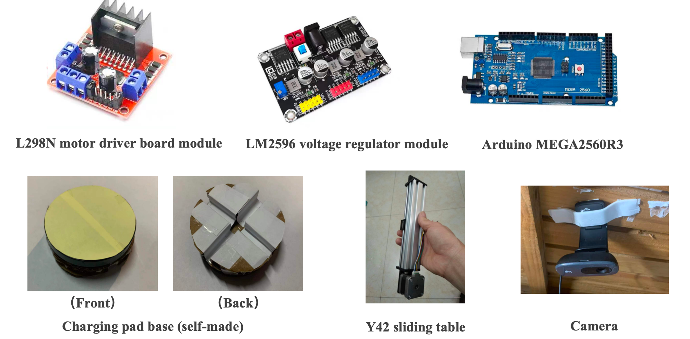
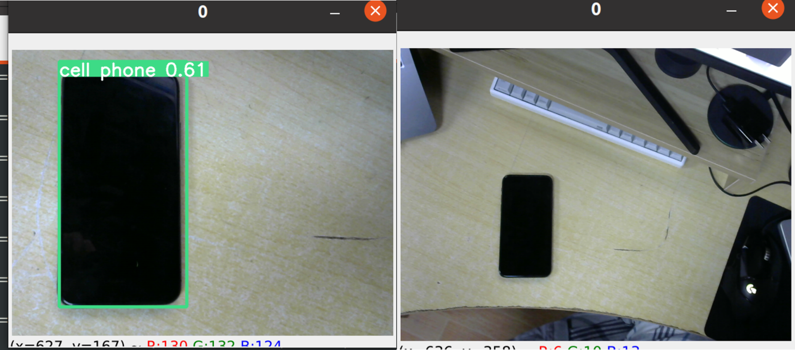

Auto-Tracking Wireless Charging Platform
This project enables a 6.3 cm diameter wireless charging pad to automatically locate a mobile phone placed above a 45 cm × 45 cm acrylic panel and move beneath it to initiate charging. The movement is achieved via two-axis linear stages that control the x-y position of the charger beneath the surface.
A camera captures real-time images which are processed via OpenCV to extract the positions of the phone and charging pad. A PID algorithm calculates control inputs by comparing current and target positions, driving stepper motors to adjust the track motion accordingly.
Control Strategy: Incremental PID
To reduce computational load, the incremental PID algorithm replaces accumulated error (integral term) with error differences over the last three steps. This avoids large memory usage while maintaining stability. The control output \( \Delta u(k) \) is based on recent changes rather than the full position deviation.
Challenges & Solutions
- Weak load capacity: The linear stage could not support the second stage on top — replaced with orthogonal support rods.
- Frame bending: Acrylic rods lacked stiffness — switched to steel rods to ensure synchronized movement.
- Motor stalls: High torque demand caused stalls — fine-tuned PID parameters to reduce speed and increase torque.
- Object detection: YOLOv5 had limited accuracy — used OpenCV edge detection and filtering for improved performance.
- Occlusion issue: Charger became untrackable when beneath the phone — implemented a pre-positioning step followed by open-loop final approach.
-

Demo Results
charging in Sleep Mode,Tracking While Screen O,Tracking After Phone Movement